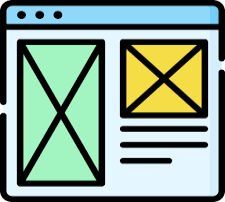

The purpose of a README file
A README file is a text file that provides information about a project. It typically
includes instructions on how to install and use the project, as well as any other relevant
information such as the project's purpose, features, and how to contribute. The README file
is often the first thing that users see when they visit a project's repository, so it is important
to make it clear and informative.
Read more about README files

The purpose of a wireframe
A wireframe is a simple line diagram representing the skeleton of a website
or an application’s user interface (UI) and core functionality. It shows where
components should be in relation to each other and what, roughly, they should do.
Read more about wireframing

Branch in Git
A branch is a sequence of commits in a project. It is a way to work on different
versions of a project at the same time. When you create a branch, you are creating
a new line of development that diverges from the main codebase. This allows you to
work on new features, fix bugs, or experiment with changes without affecting the main
codebase until you are ready to merge your changes back in.
Read more about branches in Git